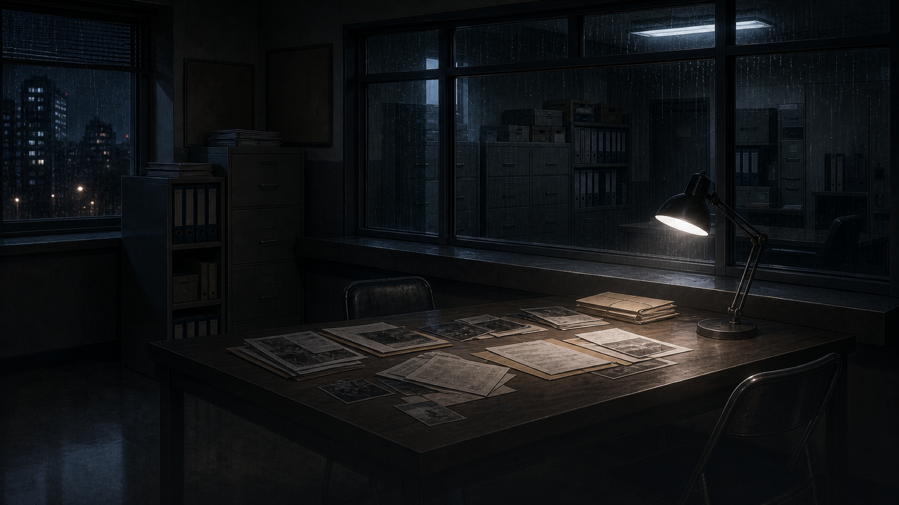
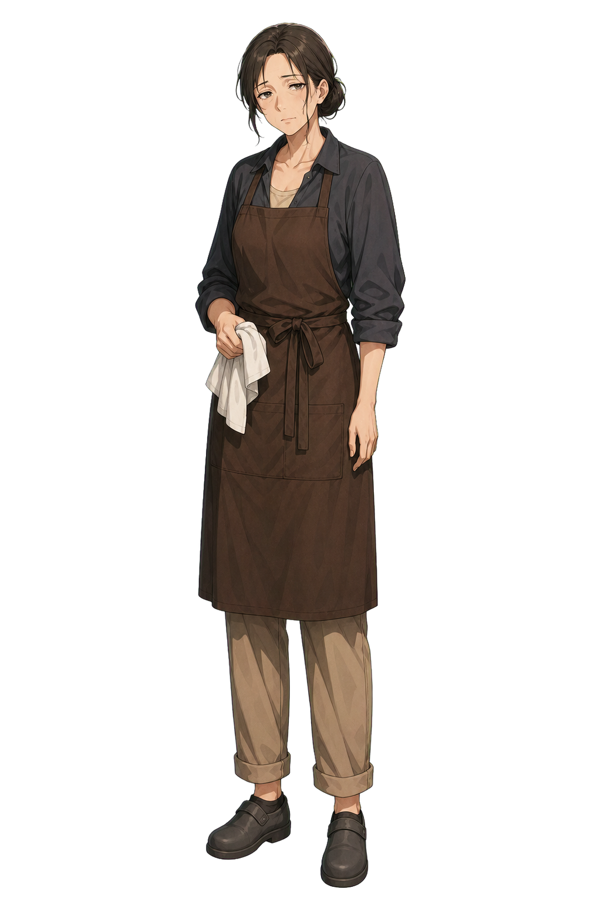

主要目標 / PRIMARY OBJECTIVE
確認高瀬在二十二點五十六分的所在位置
高瀬 亮介
深夜店長 · 第三證人
動搖 · COMPOSURE
LOG
案件檔案
證
證物櫃
05
{{ spineTitle }}
{{ spineMeta }}
可提問事項 · INQUIRY
{{ q.label }}
{{ q.tag }}
2 / 4 已破 · 選一項開始追問
完成訊問
矛盾成立 · CONTRADICTION
門鎖紀錄顯示後門在二十二點五十一分由內側開啟——那時你聲稱人在收銀台。
新增至案件檔案
言
高瀬承認曾離開收銀台
繼續追問
訊問 終了
破解矛盾
1 / 1
取得證言
2
誤呈證物
{{ wrongCount }}
重新演示
{{ lineNum }}
/ {{ lineTotal }} ↻
LOG
{{ speakerKicker }}
高瀬
{{ pressText }}
{{ spokenLine }}
退下
推進證詞
▶
駁回 · REJECTED
{{ rejectedName }}
改呈其他證物
▸
反駁
OBJECT
長按
{{ trayTitle }}
{{ trayKicker }}
ESC
鎖定證詞 · TARGET LINE
「{{ targetLine }}」
{{ ev.name }}
{{ ev.tag }}
{{ hovName }}
{{ hovSrc }}
{{ hovDesc }}
詳細 · DETAILS
{{ hovDetails }}
{{ verdictText }}
{{ trayBackText }}
{{ stampText }}